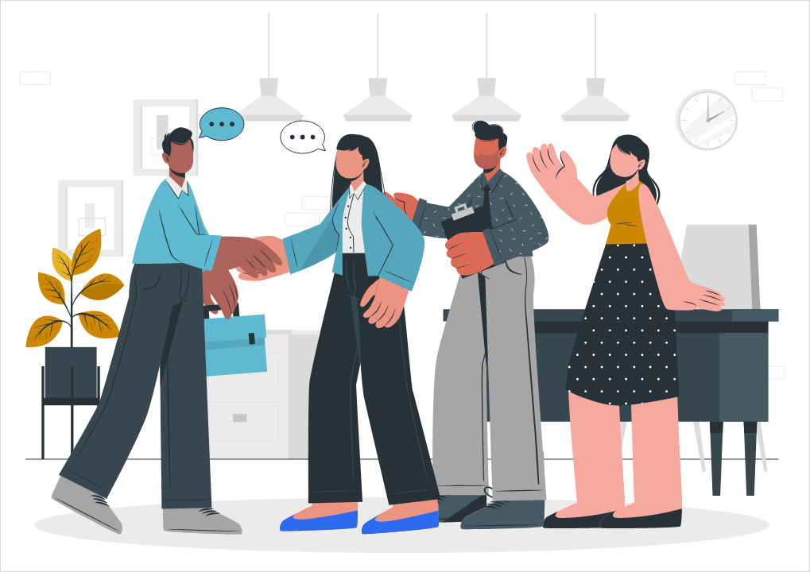

Si bien identificamos riesgos como el sedentarismo digital a la hora de utilizar dispositivos tecnologicos formando parte de un entorno digital, los espacios digitales no funcionan únicamente como ámbitos de aislamiento, sino también como “nuevos entornos para comunicarse y socializar”. Analizaremos el concepto de entorno digital como espacio de interacción social.
El entorno digital se presenta como el conjunto de plataformas, redes, aplicaciones y dispositivos que han pasado a ocupar un lugar central en la vida de los adolescentes. El uso constante de dispositivos tecnológicos ha transformado la manera en que los jóvenes se relacionan entre sí convirtiendo al entorno digital en uno de los principales espacios de interacción social y entretenimiento.
El entorno digital no es un lugar físico, pero funciona como un ámbito estructurado de encuentro, con reglas, códigos y dinámicas propias.
Ya no se trata de un complemento ocasional de la socialización presencial, sino de un espacio principal, equiparable en importancia a la escuela, el barrio o el club
Podríamos considerar a las distintas plataformas como las distintas categorías donde se forman los nuevos entornos de para comunicarse y socializar
Redes sociales: funcionan como vitrina de intereses, espacio de expresión de la identidad y canal de comunicación asincrónica o sincrónica. Son las formas actuales de comunicación digital
Videojuegos: Más allá de su dimensión lúdica, son entornos donde se pueden establecer vínculos cooperativos o competitivos, especialmente en modalidades multijugador. Mi propia experiencia personal con los videojuegos es el punto de partida de la investigación.
Plataformas digitales: Abarca desde servicios de streaming con funciones sociales hasta foros y comunidades de intereses específicos.
Encontramos distintas variables en la estructura de este tipo de relaciones sociales
Desplazamiento de la presencialidad: las interacciones que antes requerían coincidir en el espacio físico ahora pueden ocurrir de manera remota y asincrónica. Esto amplía las posibilidades de contacto, pero también modifica la calidad de los encuentros.
Nuevas competencias comunicativas: la comunicación digital exige habilidades específicas (uso de emojis, manejo de la inmediatez, interpretación de mensajes sin lenguaje corporal) que los adolescentes desarrollan de manera informal.
Permanencia de los vínculos: a diferencia de la conversación cara a cara, la comunicación digital deja huellas (mensajes, publicaciones, historias) que pueden ser revisitadas, comentadas o compartidas, generando una continuidad que trasciende el momento del encuentro.
Redefinición de la intimidad: los adolescentes comparten aspectos de su vida cotidiana en redes sociales de un modo que antes solo se reservaba para el círculo más cercano.
Sabemos que el ocio digital no funciona únicamente como espacios de aislación. Decimos que no "únicamente" porque no negamos que pueda haber aislamiento, pero rechazamos la identificación simple entre pantallas y soledad. Las nuevas formas de interacción que el entorno digital posibilita incluyen:
Permite mantener contacto con amigos aunque no coincidan los horarios.
Un adolescente con aficiones poco comunes en su entorno local puede encontrar comunidades globales de pares.

El vínculo con amigos del colegio o del barrio no se interrumpe al terminar la jornada presencial, sino que se prolonga en el entorno digital.
La vergüenza, la timidez o las dificultades de expresión oral pueden atenuarse en la comunicación escrita o mediante avatares.
El concepto de entorno digital está íntimamente ligado al de comunicación digital. La comunicación digital es el vehículo a través del cual se construyen y mantienen los vínculos en el entorno digital. La construcción de vínculos en este entorno se caracteriza por:
los adolescentes eligen a quién seguir, con quién chatear y en qué grupos participar.
los vínculos pueden ser efímeros (una partida con un desconocido) o duraderos (años de amistad mantenidos por chat).
la comunicación combina texto, imagen, video, audio y elementos interactivos.